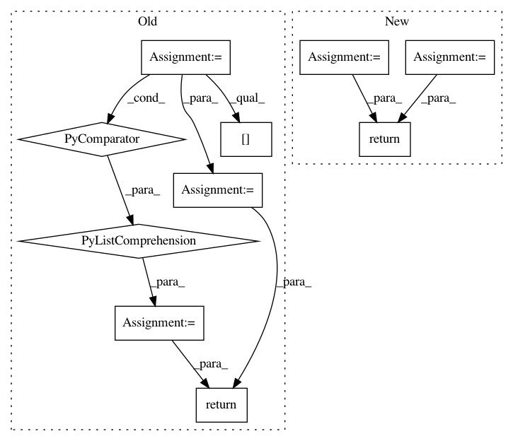

e33d1ba9150a3084947ae000f12a9b6f2f644648,conceptnet5/vectors/evaluation/wordsim.py,,evaluate_semeval_monolingual,#,307
Before Change
scores = []
for lang in ["en", "de", "es", "it", "fa"]:
scores.append(spearman_evaluate(vectors, read_semeval_monolingual(lang)))
top_scores = sorted(scores, key=lambda x: x["acc"] if not np.isnan(x["acc"]) else 0)[-4:]
acc_average = tmean([score["acc"] for score in top_scores])
low_average = tmean([score["low"] for score in top_scores])
high_average = tmean([score["high"] for score in top_scores])
return pd.Series(
[acc_average, low_average, high_average],
index=["acc", "low", "high"]
)
def evaluate_semeval_crosslingual(vectors):
According to Semeval2017-Subtask2 rules. the global score is the average of the individual
After Change
Get a semeval score for a single monolingual test set.
spearman_score = measure_correlation(spearmanr, vectors, read_semeval_monoling(lang))
pearson_score = measure_correlation(pearsonr, vectors, read_semeval_monoling(lang))
score = compute_semeval_score(spearman_score, pearson_score)
return score
def evaluate_semeval_crosslingual(vectors, lang1, lang2):
In pattern: SUPERPATTERN
Frequency: 3
Non-data size: 10
Instances
Project Name: commonsense/conceptnet5
Commit Name: e33d1ba9150a3084947ae000f12a9b6f2f644648
Time: 2017-02-23
Author: joanna.teresa.duda@gmail.com
File Name: conceptnet5/vectors/evaluation/wordsim.py
Class Name:
Method Name: evaluate_semeval_monolingual
Project Name: matthewwithanm/django-imagekit
Commit Name: 5718c304cfd3a8f0e59ba918ebf9e485d4edc738
Time: 2011-09-21
Author: matthew@exanimo.com
File Name: imagekit/fields.py
Class Name: BoundImageSpec
Method Name: _suggested_extension
Project Name: shenweichen/DeepCTR
Commit Name: 8182ea386e6529a1a2294d8e2d33fc040d0cbfb2
Time: 2019-07-21
Author: wcshen1994@163.com
File Name: deepctr/inputs.py
Class Name:
Method Name: get_linear_logit